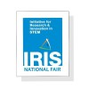

Core Committee Member
ACM-VIT Chapter
January 2020 - Present
Vellore, Tamil Nadu, India
- Assisted in crafting problem statements for competitive coding events, contributing to the development of challenging and engaging challenges.
- Attended workshops and coding sessions, developing initial problem-solving skills.
- Engaged in team-based coding projects, fostering collaborative learning environments.

National Finalist 2019
IRIS National Fair
August 2019 - January 2020
Bengaluru, Karnataka, India
- Competed in the IRIS National Fair 2019, earning the status of a national finalist for the innovative "Smart Streams" project.
- Designed and implemented "Smart Streams" project utilizing AI Multiclass Decision Forest model on Microsoft Azure to aid class 11-12 students in stream selection.
- Demonstrated problem-solving skills and innovation in education through the successful application of AI technology, enhancing the decision-making process for students.
National Finalist 2018
IRIS National Fair
August 2018 - January 2019
Manekshaw Centre, Delhi, India
- Recognized as a national finalist after successfully competing at the state level for the project "Digitization of Student Performance Record through Cloud Computing."
- Presented the project nationally, showcasing its innovative use of Cloud Computing and Amazon Web Services to streamline record-keeping, significantly reducing paperwork.
- Aimed to provide an accessible and cost-effective solution for parents, students, and teachers to easily access and compare performance data from various school assessments.